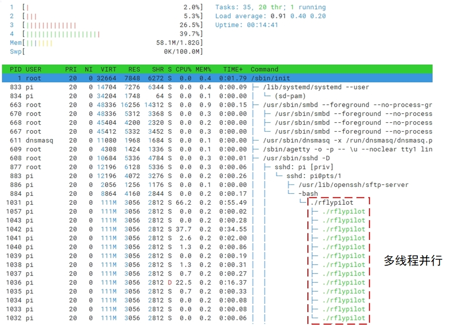
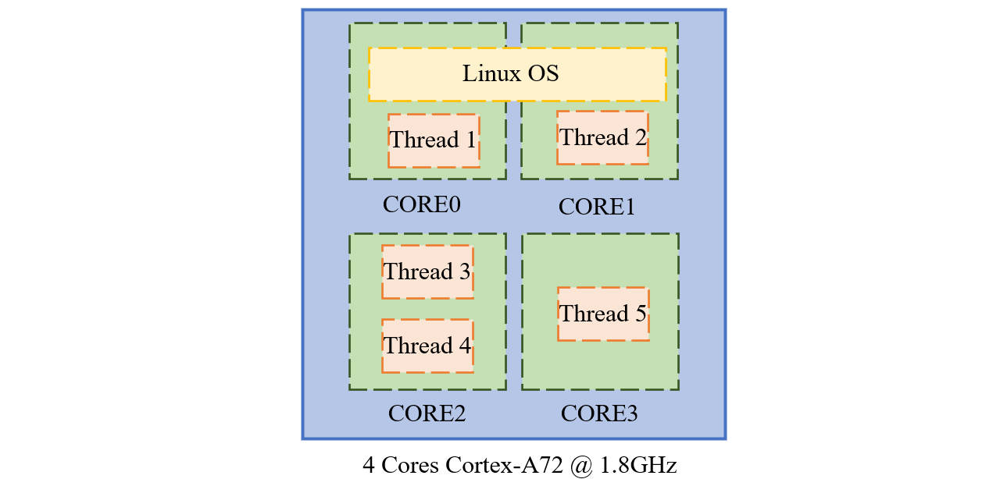
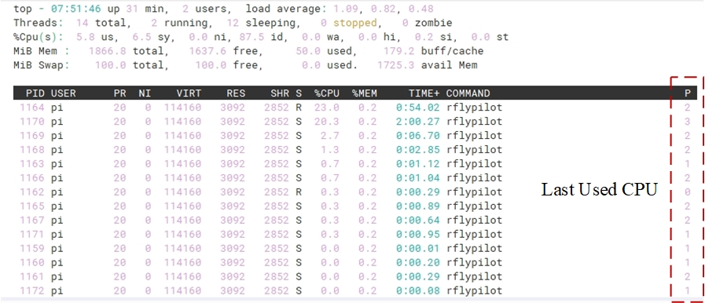
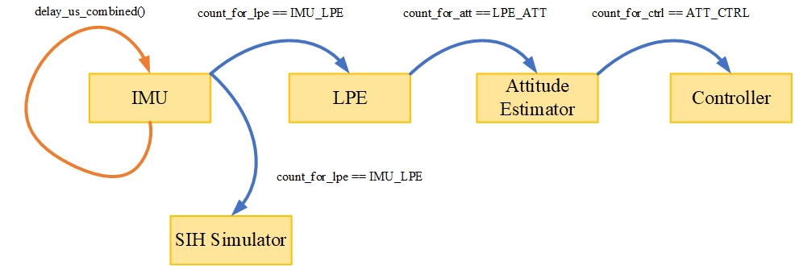
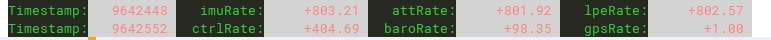
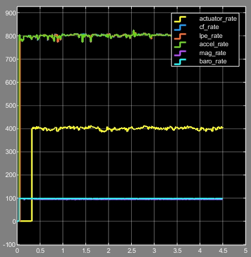

飞控系统的实时性
飞控系统的实时性指的是控制器运行频率高低与运行周期稳定性，飞行控制器的实时性是飞行控制的重要保障条件之一。对于传统的基于MCU的飞控方案，由于飞控中运行了嵌入式实时操作系统，飞控程序的实时性可以得到保障。而对于A系列处理器，保障其中飞控程序的实时性要比M系列处理器更加困难。虽然其计算能力有了极大的提高，控制算法可以以较高的频率运行，但是在飞控算法运行周期的稳定性方面，依然存在较大的挑战。
实时补丁
RflyPilot飞控系统使用的操作系统是Navio2，该系统支持PREEMPT补丁，有利于改善飞控系统的实时性。
Tip
多线程并行
RflyPilot采用了多线程并行的方案，即将飞控任务划分为多个子任务，即线程。得益于树莓派的4核CPU，RflyPilot可以做到多线程并行运行，有效提高了核心任务的运行频率。

核心屏蔽与绑定
基本原理
为了最大限度保障核心任务的运行不被打断，RflyPilot对于关键任务采用了核心绑定的操作，并在系统层面屏蔽了该CPU核心的使用，即系统默认不会使用该核心，在启动rflypilot后，某些关键任务将会被安排在该核心中运行。
下图中Thread 1与Thread 2分别运行于CORE0,CORE1。Thread 3与Thread 4运行于CORE2,Thread 5运行于CORE3。其中Linux OS运行于CORE0与CORE1中，它会打断Thread 1与Thread 2的运行。而CORE2与CORE3不运行Linux系统，其任务不易被打断，但是Thread 3与Thread 4容易相互打断。Thread 5独享CORE3，将具有较高的实时性。

运行结果
当飞控程序未运行时，CPU占用情况为
Tip
RflyPilot默认设置CORE2与CORE3为被隔离的CPU核心，相关的配置文件为/boot/cmdline.txt，isolcpus=2,3。
dwc_otg.lpm_enable=0 console=tty1 root=/dev/mmcblk0p2 rootfstype=ext4 elevator=deadline fsck.repair=yes rootwait isolcpus=2,3飞控实际运行后结果如下
实际绑定情况如下

核心绑定设置
关于飞控的核心绑定设置，读者可以参考RflyPilot飞控代码下的config/configure.h文件。
/* Estimator Thread Core */
#define ATT_EST_CORE 2
#define POS_EST_CORE 2
/* Sensor Thread Core */
#define IMU_CORE 2
#define MAG_CORE 2
#define BARO_CORE 2
#define GPS_CORE 2
/* Control Thread Core */
#define SUBS_CORE 2
#define BASIC_CTRL_CORE 2
#define CTRL_CORE 3
/* SIH Thread Core */
#define SIH_CORE 2
/* Serve Thread Core */
#define SCREEN_CORE 1
#define CONSOLE_CORE 1
#define LOG_CORE 1
#define ULOG_CORE 1提示
如果开发者需要为自己的线程绑定核心可以在线程函数中运行一次core_bind(x);，x为核心标号（0-3）。
线程同步机制
优点
线程同步机制的核心目的是让核心线程（如，IMU线程、姿态估计线程、控制器线程）之间的线程间通信延迟最小。以提高系统环路中延迟时间的稳定性，改善系统性能。
Tip
实验表明，线程同步机制可以极大改善飞行器在高动态下的闭环稳定性。
基本原理
RflyPilot中线程同步采用了触发的方式，首先IMU线程以固定频率运行（通过延时函数delay_us_combined()），当计数器count_for_lpe == IMU_LPE条件成立时，触发pthread_cond_signal(&cond_imu2lpe)。而LPE线程运行时会等待pthread_cond_wait(&cond_imu2lpe, &mutex_imu2lpe)，直到收到有IMU线程传来的消息才开始执行循环。之后由LPE线程会触发姿态估计线程，最后是控制器线程。

基本设置
其配置文件在RflyPilot飞控代码下的config/configure.h中。目前RflyPilot只对核心线程启用了该功能。
/* Rate Div */
#define USING_THREAD_SYNC 0
#define IMU_LPE 1
#define LPE_ATT 1
#define ATT_CTRL 2注意
默认该功能未启用，为启用线程同步机制，需要将USING_THREAD_SYNC设为1。IMU_LPE/LPE_ATT/ATT_CTRL为相应的分频系数。
IMU线程的运行频率可以在rflypilot.txt文件中进行设置，默认imu_rate = 800，即800Hz。
| 线程 | 运行频率(Hz) |
|---|---|
| IMU | 800 |
| LPE | 800/IMU_LPE = 800 |
| ATT | 800/IMU_LPE/LPE_ATT = 800 |
| CTRL | 800/IMU_LPE/LPE_ATT/ATT_CTRL = 400 |
运行结果


Warning
当启用USING_THREAD_SYNC后，rflypilot.txt中的controller_rate,attitude_est_rate,lpe_rate将不再生效。
代码优化
在代码中，RflyPilot尽量减少了频繁的IO操作，以保障较小的任务耗时。